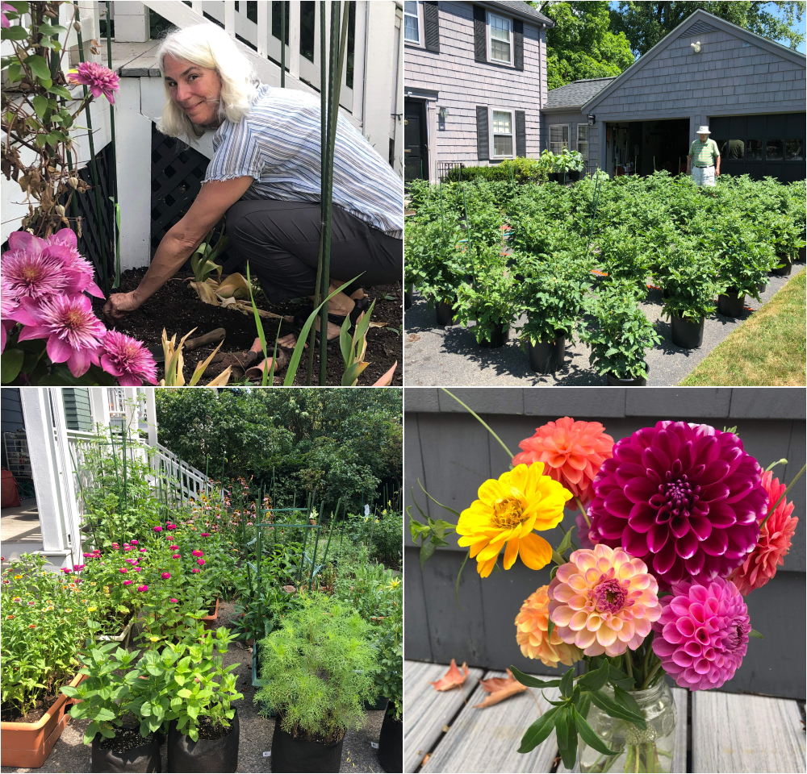

|
Hello dahlia friends!
Welcome Spring!!!
It was so wonderful to see so many of you at our
meeting on March 5. The day was filled with lots
of fun, laughter and learning about the
difference between bulbs and tubers. Plus we got
a ton of chicken wire balls created! Thanks to
all our members who turned out for the Bloom
Exhibit planning meeting and pitched in. We
loved connecting with all of you who were there.
The days are noticeably lighter for longer, and
it’s exciting to start planning for our new
season of planting. As we look back over the
past two years, we would like to thank those of
our YDS Growing Partners who helped make it
possible for YDS to bring all of you two
fantastic tuber sales and to forge partnership
and friendship connections that went beyond
simply the dahlias. We are truly grateful to our
past Growing Partners and we look forward to
reconnecting with our continuing Growing
Partners for 2023.
We are very excited to share with you three
Growing Partners new to YDS this year:
Stay tuned for more details and be sure to check
out the dahlias coming at The Garden at Elm Bank
and Stevens-Coolidge House & Gardens.
Be sure to join us for our next meeting on Zoom
Sunday, April 2nd. With dahlias in full bloom in
Australia, it’s sure to be a treat to get us all
inspired.
See you soon & hope to see you there!
– Misty & Carol
|
|
April 2nd Meeting
Dahlias & Floral Designs with Deb Collett of
Dahlia Society of Victoria
Photos by Deb Collett
Here in the Northern Hemisphere we have yet to
begin planting our gardens while in the Southern
Hemisphere it’s dahlia show season and dahlias
are still blooming. What could be better at this
time of year than to see a dahlia garden full of
dahlias in bloom and watch the creation of a
unique challenge floral design arranged
especially for us via Zoom?
Our guest presenter for April is Deb Collett of
@debsdahlias
in Victoria, Australia, and we are in for an
amazing presentation and demonstration. Deb
Collett has been growing dahlias for several
years and brings her blooms and floral designs
to show and has won many awards for her blooms
and for her stunning floral designs. A dahlia
judge and floral art judge and a Member of the
Dahlia Society of Victoria, Deb will share with
us her background in dahlias and floral art and
take us on a virtual tour through her dahlia
garden showing us the many different dahlias she
loves to grow for show and arranging. Deb will
follow up her presentation with a demonstration
of a floral design she will create for us based
on floral design challenge themes YDS has
created for our 2023 2nd Annual YDS Bloom
Exhibit being held in the fall. You won’t want
to miss this unique opportunity to meet Deb
virtually, see her create one of her show
stopping floral designs for us and be inspired
to design and arrange with your dahlias this
year.
Deb Collett
 debsdahlias
debsdahlias
Dahlia Society of Victoria
dahliasocietyofvictoriaaust
 Dahliasocietyofvictoriaaustralia
Dahliasocietyofvictoriaaustralia
Location:
Zoom
Zoom Link:
https://us06web.zoom.us/j/85966076185?pwd=ZUhCVmMwdVRwdEdmYTFQTXhNTTJJdz09
Date & Time:
Sunday, April 2, 2023 from 5:45pm to 8:00pm
*arrive 15 minutes before to get settled & say
hello.
|
|
2nd Annual Public Tuber Sale
@ Massachusetts Horticultural Society Garden at
Elm Bank
Photos by John Livornese
We are thrilled to have our annual Public Tuber
& Plant sale at Massachusetts Horticultural
Society Garden at Elm Bank this year in just a
few weeks. Rain or Shine, the sale will be open
to the public and of course for any members that
would like to pick up a few more tubers. Come
check out the gardens and help out with the
sale. We are excited to be able to offer our
locally grown tubers and continue to raise funds
for the club. We have lots of wonderful
varieties available so please help us get the
word out. Selling tubers is a vital way for the
club to continue our wonderful programming.
https://www.masshort.org/
 www.masshort.org
www.masshort.org
masshort
MassHort
|
|
YDS Volunteers Needed
We will be needing volunteers to help prepare
and sell tubers and promote Yankee Dahlia
Society at our Public Sale at Elm Bank. Extra
hands to help organize, prepare and staff the
sale would be wonderful. It is sure to be a fun
time! If you are interested in helping as we
lead up to the sale, especially the weekend
leading up to the sale on Saturday, April 22nd
and Sunday, April 23rd and on the sale day
Saturday, April 29th. We would love to have your
help even if you can help out just a few hours
that would be greatly appreciated. Please see
the April Tab on SignUp Genius Link to sign up.
2023 Volunteer Activities - SignUp Genius
|
|
Member Spotlight
Meredith Joy

Photos by Meredith Joy
meredithjoy9
The amaryllis are blooming. More will come out
of the basement every couple of weeks, with the
goal of continuous blooms until springtime, when
the daffodils and allium will rise to kick off
another season. But, in between the amaryllis
and the daffodils, the stars of the show are
always the dahlias.
Tracing back, it probably began in the fall of
2016 (a guess) when my partner and I
serendipitously wandered into the Provincetown
Dahlia show. The amazing colors, variety of
shapes and sizes and vibrancy of these
delightful wonders of nature started me on a
path I know is shared by many.
I also know I am in good company with the
process of dahlias taking their hold. It began
with a few packages, most likely purchased from
a chain store, and not much care or effort was
given to the method of digging and
overwintering. Year by year, various perennials
were relocated, lettuce was evicted from the
small raised bed, and tomatoes graciously
stepped aside, all to make room for more
dahlias.
Compared to many, my garden is small- a 10 x 10
foot postage stamp outside our back porch, three
small raised beds on the side of the house,
trying to capture every inch of full-sun light,
various containers in the driveway, and starting
in summer of 2022, a 15 x 15 plot of dirt at the
community garden. I am already on a wait list
for a larger size plot. And also, I am
attempting to embrace the challenge of limited
space, to be intentional and selective, and to
feel grateful for what I am able to grow.
Last year I planted 24 tubers at home (lost
several to rot). At the community garden there
were 6 varieties and approximately 15 plants. I
love ball dahlias; the colors are gorgeous and
since I have limited space I am interested in
reliable and productive varieties. I love the
types that have some variation in color-for
example: Caitlin’s Joy: purple with salmon and
coral undertones, Suncrest: golden yellow with
some orange undertone and Bracken Rose: a dusty
rose color that changes during the season. I
also have a fondness for the varieties that age
well in a vase.
I have always loved gardening, something I have
inherited from both of my parents and that
connection becomes more meaningful now that both
my parents have passed away. I love being able
to walk into the garden and cut flowers to have
in our own home and to also give to friends and
family. In addition to dahlias, I also love
snapdragons (Madame Butterfly) zinnias (Queen
Lime Series, Benary’s Giant), marigolds,
scabiosa among others. I love to watch the
delight when other people see the garden or
receive flowers. Sharing the joy with others is
part of what is meaningful to me about
gardening. I also enjoy the camaraderie with
other gardeners and people from YDS-the spirit
of everyone nurturing and supporting this
collective passion.
For this coming season I am focusing on adding
more plants for foliage to make bouquets more
interesting. I am also sharing my interest in
dahlias with other gardener friends and
encouraging them to try dahlias. One thing that
I recommend to anyone who is new to growing
dahlias is to buy locally, preferably from a
dahlia society. That way you know you are
getting something that grows well in this
climate, and at the same time you are supporting
a local organization that is focused on making
dahlia growing accessible to more people.
|
|
Dahlia Tip
Do you know if you really need to add that Epsom
salt?
By Carol Palmer
Photo by Misty Florez
You may have heard it recommended to add Epsom
salt to the planting hole when you’re planting
your dahlias, for a whole range of benefits from
greener foliage to more and bigger blooms. But
before you rush out to the grocery store for a
$5 bag or two, it’s important to get an
understanding of whether or not you really need
it.
We were chatting the other day at Misty’s studio
with YDS member Lori Nelson about dahlias, of
course, and the subject of Epsom salt came up.
Lori shared with us a podcast about it she had
found very interesting, and we want to share it
with all of you as well.
Epsom salt is a naturally occurring compound
consisting of magnesium and sulfur (MgSO4). It
is named for a spring in Epsom, England where it
was discovered. Epsom salt will certainly add
magnesium and sulfur to your soil, both of which
plants definitely need. The question is, does
your soil have enough magnesium and sulfur
already? If so, do you really have to add any
more? The best way to answer this question is to
start with a soil test.
Spring is a great time to get a soil sample in
preparation to plant. It is easy to collect
samples and send in for results. We’ve had soil
tests done at the University of Massachusetts
and the University of Maine. The results of the
tests were similar, and showed that the soil
tested had more magnesium than necessary, along
with adequate levels of sulfur. It turned out we
didn’t need to add any magnesium or sulfur to
the garden soil we tested.
Empress of Dirt
Check out the podcasts, and the three related
articles:
https://empressofdirt.net/epsom-salts/
Two minutes in the Garden - Gardening Podcasts
329 –
The Debate About Epsom Salt (Part 1)
It’s a divisive issue in gardening circles. Will
Epsom salt do wonderful things for your plants,
or it is a load of unscientific hooey?
330 –
The Debate About Epsom Salt (Part 2)
What does scientific research tell us about the
effectiveness of Epsom salt in the garden?
Soil Testing Services
University of Massachusetts - soil testing
service
University of Maine - soil testing service
(This one is easier to interpret than the
UMass test)
University of Maine - How to take a Soil
Sample
For those of you who garden in Worcester County,
MA, the Worcester County Soil Conservation
District will come out for a fee and take soil
samples and send them out to the University of
Maine for you:
https://worcesterconservation.org/soil-sampling/
|
|
American Dahlia Society

Photos by Misty Florez
Renew your Membership or Join as a new member
by March 31st to receive the June Bulletin.
The American Dahlia Society (ADS) is organized
to promote and encourage the development of and
appreciation of the dahlia through educational
and research activities and by supporting the
more than 60 local dahlia societies who are a
part of ADS.
Whether you are interested in growing seedlings
or hybridizing, showing dahlias, growing dahlias
as cut flowers, or just want to know more about
them, you should definitely consider joining
ADS. ADS publishes a very informative and very
attractive full color Bulletin three times a
year along with an annual Classification and
Handbook of Dahlias that is an invaluable
reference. We are taking new and renewal ADS
memberships now. All ADS memberships will be
valid through April 30, 2024.
Interested in Joining the American Dahlia
Society:
Join the American Dahlia Society or renew your
annual membership through YDS.
-
USA Individual Membership (1-person,
1-Classification book)
$30
-
USA Household Membership (2-people,
2-Classification books)
$35
Email:
info@yankeedahliasociety.com
Subject:
ADS Registration
|
|
SignUp Genius - Monthly Volunteer Link
2023 Volunteer Activities - SignUp Genius
Join us and volunteer in April!!
As things are a bit slower this time of year, do
you have some extra time to help out the club?
Come and join us as there is something we are
always working on. Spring is around the corner
and we need to get the remaining tubers labeled
and start organizing and making plans for our
2023 YDS Growing Partners and the tubers we will
grow out for club stock.
Check out the SignUp Genius for dates, times and
to join us! We greatly appreciate all the member
volunteer time and it’s always a lot of fun to
get together. Don’t see a day/time on the
calendar but you have time to help? Please reach
out (text or email) and let us know your
availability and if there is something you would
like to help with otherwise we will surely have
a job for you. Thank you!
|
|
Thank You to Our March Volunteers
Anne and Fiona labeling club tubers for our
Spring Sale Restock happening soon.
Photo by Misty Florez
We appreciate all the help we had this month!
From cutting chicken wire to labeling tubers and
more, together you all made it happen.
Thank you
.
- Andrea Campbell
- Claire Carrazco
- Rich D’Orsi
- Liz Larson
- Anne Lunney
- Fiona Lunney
- Lori Nelson
- Cheryl Piacentini
- Julia Oswald
- Betsy Szymczak
- Dan Treger
|
|
YDS Store
We’ve got you covered for your dahlia growing
supply needs. Purchase online and items can be
shipped with your tuber order or arrange for
pick up at the May 7th meeting or email to
coordinate.
Email:
info@yankeedahliasociety.com
|
|
Potting Kit
for $22.00/each
For those of you who want to start your
tubers indoors to have rooted plants
ready to go into the garden, now is the
perfect time to begin potting up your
tubers. YDS has Potting Kits and more
available in our online store.
Contains:
-
1x
4.5" Deep Black Form Tray - Square
Pots: 15/tray
-
15x
4.5" Deep Black Form Pots - Square
-
20x
6" Plant Labels
-
1x
Garden Marker
|
|
|
Dahlia Forms
Anemone
Cultivar: Sandia Brocade
Photography by: Misty Florez
|
|
|
Upcoming Meetings & Events
See All Meetings
Sunday, March 5th:
Hands On Seasonal Demonstration and Workshop @
Spence Farm, Woburn MA
Saturday, April 2nd:
Zoom meeting: Zoom Meeting with Guest
Presenter
|
|
|
|
|